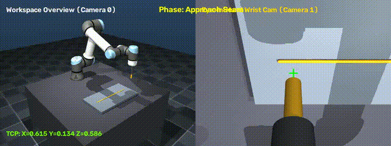
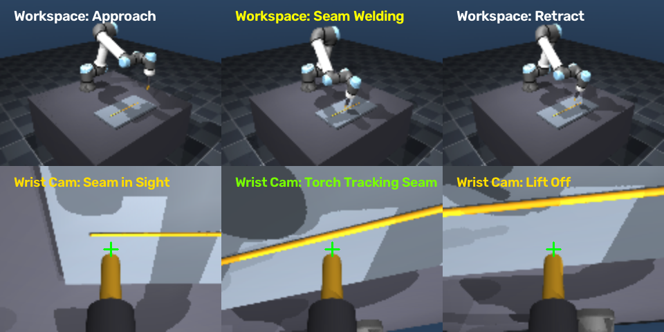

Embodied AI Teleoperation & Demonstration Visualizer


Top row: Workspace overview camera showing robot arm approaching, seam welding, and retracting.
Bottom row: Eye-in-hand wrist camera showing close-up tool center point aligned to the workpiece seam.
From verify_env.py: Freefall of a 0.5 kg red sphere bouncing on a ground plane with GPU EGL offscreen rendering.